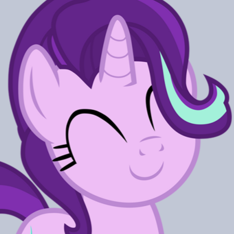

Nebula - Atlas and the Stars

Starlight - My Little Pony
Supergirl - DCSHG
Peridot - Steven Universe
 Fiore - Trovata random
Fiore - Trovata random
| Come ci si sente ad essere il migliore? |
Molto bene, grazie |
| Colori preferiti? |
Grigio chiaro (#C2C7D6) e verde (#7BB602) |
| Numero preferito? |
9 |
| Quando compi gli anni? |
2 Dicembre |
| Animale preferito? |
Tartaruga |
| Razza di cane preferita? |
Komondor:
|
| Estathe limone o pesca? |
PESCA. Non esistono altre risposte corrette |
| Che musica ascolti? |
Principalmente metal (di diversi sottogeneri), pero' odio gli Iron Maiden |
| Interessi? |
Giochi di carte di vario tipo
L'importante e' essere il piu' tossico possibile su ognuno di essi.
"SpazioVuoto" su DuelingBook |
| Pratichi qualche strumento? |
No, ma mi piacerebbe iniziare a suonare il violino |
| Fiore prerito? |
Glicine |
| Pokemon preferito? |
Mawile
(Al secondo posto Psyduck) |